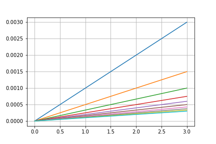

Welcome to ngspyce’s documentation!¶
Introduction¶
This is a library that allows Python applications to talk to Ngspice, an engine for simulating electronic circuits. Currently it supports sending commands to the engine and reading the results into numpy arrays, for plotting and analysis. Future goals include voltage and current sources defined by Python functions, and the possibility of stepping through a simulation in order to inspect results and modify the circuit mid-run.
Getting libngspice¶
This library requires libngspice.
On Linux, this means you have to download the source package for ngspice and compile it like this:
./configure --with-ngshared
make
sudo make install
On OSX, libngspice can be installed with brew. Note that the ngspice
package does not supply the required shared libraries.
On Windows, ngspyce currently assumes that ngspice.dll is installed in
C:\Spice\bin_dll (32-bit Python) or C:\Spice64\bin_dll (64-bit Python).
Go to Ngspice Download and
choose one of the packages (such as ngspice-26plus-scope-inpcom-6-64.7z)
that contains ngspice.dll, and extract it to C:\.
Basic Usage¶
>>> import ngspyce as ns
Load a circuit:
>>> ns.circ('''
... v1 b 0 dc 3
... r1 b a 1k
... r2 a 0 2k''')
Run analyses
>>> ns.operating_point()
{'v1#branch': array([-0.001]), 'a': array([ 2.]), 'b': array([ 3.])}
>>> ns.save('a')
>>> ns.dc('v1', 3, 9, 3)
{'a': array([ 2., 4., 6.]), 'v-sweep': array([ 3., 6., 9.]), 'v1': array([3, 6, 9])}
Making netlists¶
Geda¶
You can draw the schematic with GSchem and then export a netlist with
gnetlist -g spice-sdb schematic.sch -o netlist.net
Kicad¶
Draw the schematic with Eeschema and click the Export netlist button, targeting Spice.
Command reference¶
For details on simulation commands, check out the Ngspice manual.
Circuit loading and modification¶
-
ngspyce.circ(netlist_lines)¶ Load a netlist
Parameters: netlist_lines : str or list of str
Netlist, either as a list of lines, or a single multi-line string. Indentation and white space don’t matter. Unlike a netlist file, the first line doesn’t need to be a comment, and you don’t need to provide the .end.
Returns: int
1 upon error, otherwise 0.
Examples
Using a sequence of lines:
>>> ns.circ(['va a 0 dc 1', 'r a 0 2']) 0
Using a single string:
>>> ns.circ('''va a 0 dc 1 ... r a 0 2''') 0
-
ngspyce.source(filename)¶ Evaluate a ngspice input file
This function is the same as the ngspice source command, so the first line of the file is considered a title line, lines beginning with the character
*are considered comments and are ignored, etc.Parameters: filename : str
A file containing a circuit netlist.
-
ngspyce.alter_model(model, **params)¶ Change parameters of a model card
Parameters: model : str
Model card name
-
ngspyce.alter(device, **parameters)¶ Alter device parameters
Parameters: device : str
Instance name
Examples
>>> ns.alter('R1', resistance=200) >>> ns.alter('vin', ac=2, dc=3)
Analyses¶
-
ngspyce.ac(mode, npoints, fstart, fstop)¶ Small-signal AC analysis
Parameters: mode : {‘lin’, ‘oct’, ‘dec’}
Frequency axis spacing: linear, octave or decade
npoints : int
If mode is
'lin', this is the total number of points for the sweep. Otherwise, this is the number of points per decade or per octave.fstart : float
Starting frequency
fstop : float
Final frequency
Returns: dict from str to ndarray
Result vectors: voltages, currents and frequency (under key
'frequency').Examples
Sweep from 1 kHz to 10 MHz with 3 points per decade
>>> results = nc.ac('dec', 3, 1e3, 10e6) >>> len(results['frequency']) 13
Sweep from 20 to 20 kHz in 21 linearly spaced points
>>> results = nc.ac('lin', 21, 20, 20e3) >>> len(results['frequency']) 21
Bode plot of low-pass filter:
ns.circ(''' v1 in 0 dc 0 ac 1 r1 in out 1k c1 out 0 1n''') results = ns.ac('dec', 2, 1e0, 1e9) plt.semilogx(results['frequency'], 2*ns.decibel(results['out']))

-
ngspyce.dc(*sweeps)¶ Analyze DC transfer function, return vectors with one axis per sweep
Parameters: sweeps:
One or two sequences of (src, start, stop, increment). src can be an independent voltage or current source, a resistor, or
'TEMP'.Returns: dict from str to ndarray
Voltages and currents. If there is a secondary sweep, the ndarrays will have two axes.
Examples
Sweep a voltage source
>>> ns.circ('v1 a 0 dc 0'); >>> ns.dc('v1', 0, 5, 1) {'a': array([ 0., 1., 2., 3., 4., 5.]), 'v-sweep': array([ 0., 1., 2., 3., 4., 5.]), 'v1': array([0, 1, 2, 3, 4, 5]), 'v1#branch': array([ 0., 0., 0., 0., 0., 0.])}
Add a secondary sweep:
ns.circ(['v1 a 0 dc 0', 'r1 a 0 1k']) results = ns.dc('v1', 0, 3, 1, 'r1', 1e3, 10e3, 1e3) plt.plot(-results['v1#branch']);
-
ngspyce.operating_point()¶ Analyze DC operating point
Returns: dict from str to ndarray
Voltages and currents
Retrieving results¶
-
ngspyce.vectors(names=None)¶ Dictionary with the specified vectors (defaults to all in current plot)
Parameters: names : list of str, optional
Names of vectors to retrieve. If omitted, return all vectors in current plot
Returns: dict from str to ndarray
Dictionary of vectors. Keys are vector names and values are Numpy arrays containing the data.
Examples
Do an AC sweep and retrieve the frequency axis and output voltage
>>> nc.ac('dec', 3, 1e3, 10e6); >>> nc.ac_results = vectors(['frequency', 'vout'])
-
ngspyce.save(vector_name)¶ Save this vector in the following analyses
If this command is used, only explicitly saved vectors will be kept in next analysis.
Parameters: vector_name : str
Name of the vector
-
ngspyce.plots()¶ List available plots (result sets)
Each plot is a collection of vector results
Returns: list of str
List of existing plot names
Examples
Each analysis creates a new plot
>>> ns.circ(['v1 a 0 dc 1', 'r1 a 0 1k']); ns.plots() ['const'] >>> ns.operating_point(); ns.plots() ['op1', 'const'] >>> ns.dc('v1', 0, 5, 1); ns.plots() ['dc1', 'op1', 'const']
Get lists of vectors available in different plots:
>>> ns.vectors(plot='const').keys() dict_keys(['echarge', 'e', 'TRUE', 'FALSE', 'no', 'i', ... 'c', 'boltz']) >>> ns.vectors(plot='ac1').keys() dict_keys(['V(1)', 'vout', 'v1#branch', 'frequency'])
-
ngspyce.vector(name, plot=None)¶ Return a numpy.ndarray with the specified vector
Uses the current plot by default.
Parameters: name : str
Name of vector
plot : str, optional
Which plot the vector is in. Defaults to current plot.
Returns: ndarray
Value of the vector
Examples
Run an analysis and retrieve a vector
>>> ns.circ(['v1 a 0 dc 2', 'r1 a 0 1k']); >>> ns.dc('v1', 0, 2, 1); >>> ns.vector('v1#branch') array([ 0. , -0.001, -0.002])
-
ngspyce.vector_names(plot=None)¶ Names of vectors present in the specified plot
Names of the voltages, currents, etc present in the specified plot. Defaults to the current plot.
Parameters: plot : str, optional
Plot name. Defaults to the current plot.
Returns: list of str
Names of vectors in the plot
Examples
List built-in constants
>>> ns.vector_names('const') ['planck', 'boltz', 'echarge', 'kelvin', 'i', 'c', 'e', 'pi', 'FALSE', 'no', 'TRUE', 'yes']
Vectors produced by last analysis
>>> ns.circ('v1 a 0 dc 2'); >>> ns.operating_point(); >>> ns.vector_names() ['v1#branch', 'a']
-
ngspyce.destroy(plotname='all')¶ Erase plot from memory
Parameters: plotname : str, optional
Name of a plot. If omitted, erase all plots.
Circuit information¶
-
ngspyce.model_parameters(device=None, model=None)¶ Model parameters for device or model
Parameters: device : str, optional
Instance name
model : str, optional
Model card name
Returns: dict from str to float or str
Model parameters
Examples
Parameters of a resistor’s model
>>> ns.circ('r1 a 0 2k'); >>> ns.model_parameters(device='r1') {'description': 'Resistor models (Simple linear resistor)', 'model': 'R', 'rsh': 0.0, 'narrow': 0.0, 'short': 0.0, 'tc1': 0.0, 'tc2': 0.0, 'tce': 0.0, 'defw': 0.0, 'l': 0.0, 'kf': 0.0, 'af': 0.0, 'r': 0.0, 'bv_max': 0.0, 'lf': 0.0, 'wf': 0.0, 'ef': 0.0}
-
ngspyce.device_state(device)¶ Dict with device state
Parameters: device : str
Instance name
Returns: dict from str to float or str
Device description, model, operating point, etc.
Examples
Resistor description
>>> ns.circ(['r1 a 0 4']) >>> ns.device_state('r1') {'description': 'Resistor: Simple linear resistor', 'device': 'r1', 'model': 'R', 'resistance': 4.0, 'ac': 4.0, 'dtemp': 0.0, 'bv_max': 0.0, 'noisy': 0.0}
Sending arbitrary commands¶
-
ngspyce.cmd(command)¶ Send a command to the ngspice engine
Parameters: command : str
An ngspice command
Returns: list of str
Lines of the captured output
Examples
Print all default variables
>>> ns.cmd('print all') ['false = 0.000000e+00', 'true = 1.000000e+00', 'boltz = 1.380620e-23', 'c = 2.997925e+08', 'e = 2.718282e+00', 'echarge = 1.602190e-19', 'i = 0.000000e+00,1.000000e+00', 'kelvin = -2.73150e+02', 'no = 0.000000e+00', 'pi = 3.141593e+00', 'planck = 6.626200e-34', 'yes = 1.000000e+00']
Engine information¶
-
ngspyce.xspice_enabled()¶ Was libngspice compiled with XSpice support?
Returns: bool
Utility functions¶
-
ngspyce.decibel(x)¶ Calculate 10*log(abs(x))
-
ngspyce.linear_sweep(start, stop, step)¶ Numbers from start to stop (inclusive), separated by step.
These match the values used in a dc linear sweep
Returns: ndarray Examples
>>> ns.linear_sweep(0, 100, 20) array([ 0, 20, 40, 60, 80, 100])